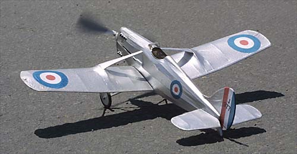
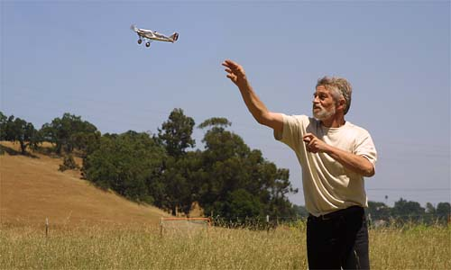

|
This model is one of Tom's first efforts. he has recently taken hold of stick and tissue modeling again, and is showing wonderful results.
Despite some tricky construction, Tom did a great job with the DH 77 and it flies very well. |


Copyright 2001, Thayer Syme. All rights reserved